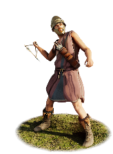
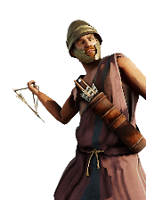

RTR: Imperium Surrectum
RTR: Imperium SurrectumKestros Slingers


Class: missile · Category: infantry · Men per unit: 40
Reforms: Unlocked by Macedonian Military Reforms
Description
These slingers operate a new kind of Macedonian weapon called the Kestros. Deadly dart-like arrows are discharged via a sling, not only inflicting heavy casualties but also striking fear into unarmoured enemy troops. The kestros slingers themselves are lightly equipped in the style of common Hellenic psiloi, wearing a simple tunic or chiton as well as bronze helmets or Petasos hats. As these men are lightly armed, they should stay away from close combat and are most effective when shooting their projectiles into the enemies’ flanks or backs.
Historical background
The ‘kestrosphendone’ was a Macedonian invention while fighting Rome in the Third Macedonian War (171-168 BC). They are mentioned by Polybios (XXVII.11.1-7) and described by Livy (XLII.65.9-10) as follows: "It consisted of a pointed iron head two palms long, fastened to a shaft made of pinewood, nine inches long and as thick as a man's finger. [10] Round the shaft three feathers were fastened as in the case of arrows, and the sling was held by two thongs, one shorter than the other. When the missile was poised in the centre of the sling, the slinger whirled it round with great force and it flew out like a leaden bullet.”
Livy describes the Romans suffering heavy casualties in a battle near Phalanna against king Perseus (213/12-165BC) from the fire of these kestrosphendones. The darts were shot down at the legionaries from above, while they attempted to climb the hill in order to reach the Macedonian troops. The casualties must have been considerable, as Perseus asked them to surrender. However, the Romans were eventually saved by the arrival of their allied Numidian cavalry (Liv. XLII.65.12).
Kestrosphendones appear on the copper coins of the Thessalian League around this time (Warren, Thessalian League (1961), pp. 5-8; pl. 1.11-14). The coins might have been struck at Demetrias in 171 BC as part of a propaganda issue (Pritchett, The Greek State at War (1991), p. 38). The word κεστρος (kestros) is also used to describe the "sword-like spikes" (Dion. Hal. XX.1.6) that were mounted on 300 anti-elephant wagons that were unsuccessfully employed by the Romans against Pyrrhos’ elephants at the battle of Asculum in 279 BC. Furthermore, there are several Athenian ephebic inscriptions of the Roman period mentioning the kestrophylax (IG II2, 3733 and 3734), who perhaps replaced the katapaltaphetes (artillery instructor) at the end of the 1st century BC (Pelekidis, Histoire de l’éphébie attique (1962), p. 269). The catapult may have disappeared from Athens in the 2nd century BC, and ephebes could have received training in operating engines or slings discharging "a bolt called a kestros" instead (Pritchett, The Greek State at War (1991), p. 39).
Stats
| Rank in roster | Rank in roster | Rank in roster | Rank in roster | ||||||||
|---|---|---|---|---|---|---|---|---|---|---|---|
| Men per unit | 40 | ███······· 28% | Attack | 14 | ███████··· 72% | Charge bonus | 4 | ██········ 21% | Defence | 14 | █········· 6% |
| · armour | 1 | █········· 0% | · defence skill | 13 | █········· 14% | · shield | 0 | █········· 0% | Morale | 9 | ███······· 27% |
| Discipline | normal | Training | trained | Recruitment cost | 1,547 dn | ██········ 21% | Upkeep per turn | 623 dn | █████····· 48% | ||
| Turns to recruit | 3 |
Weapons
| Primary | Secondary | Primary | Secondary | Primary | Secondary | Primary | Secondary | ||||
|---|---|---|---|---|---|---|---|---|---|---|---|
| Attack | 14 | 4 | Charge bonus | 4 | 4 | Type | missile · archery | melee · simple | Damage | blunt | piercing |
| Projectile | kestros_dart | — | Range | 100 | — | Ammunition | 10 | — | Attributes | — | — |
| Min delay between blows | 25 | 25 |
Defence
| Primary | Secondary | Primary | Secondary | Primary | Secondary | Primary | Secondary | ||||
|---|---|---|---|---|---|---|---|---|---|---|---|
| Total | 14 | — | Armour | 1 | — | Defence skill | 13 | — | Shield | 0 | — |
| Material | flesh | — |
Condition, terrain and upkeep
| Hit points | 1 · mount 6 | Ground: scrub / sand / forest / snow | 0 / 0 / 0 / 0 | Heat penalty | 0 | Charge distance | 30 |
| Fire delay | 0 | Food consumed (low / high) | 60 / 300 | Mass per man | 0.82 | Formation: close / loose | 1.2 x 2.8 / 2.16 x 5.04 · 5 ranks · square |
| Men per unit | 40 as the unit file states — the game multiplies this by your unit size |
In battle: Very good stamina
The full attribute list (3)
sea_faring, hide_forest, very_hardy
Who can recruit it
A core roster unit for one faction, which can raise it anywhere it holds the right building:
Exactly what a settlement must have, route by route (3)
| Building | Also requires | Building | Also requires | Building | Also requires | ||
|---|---|---|---|---|---|---|---|
| Indirect Rule | Tier 2 Military Industrial Complex · Macedonian Military Reforms · Tier 1 Colony | Direct Rule | Tier 2 Military Industrial Complex · Macedonian Military Reforms · Tier 1 Colony | Homeland | Tier 2 Military Industrial Complex · Macedonian Military Reforms |